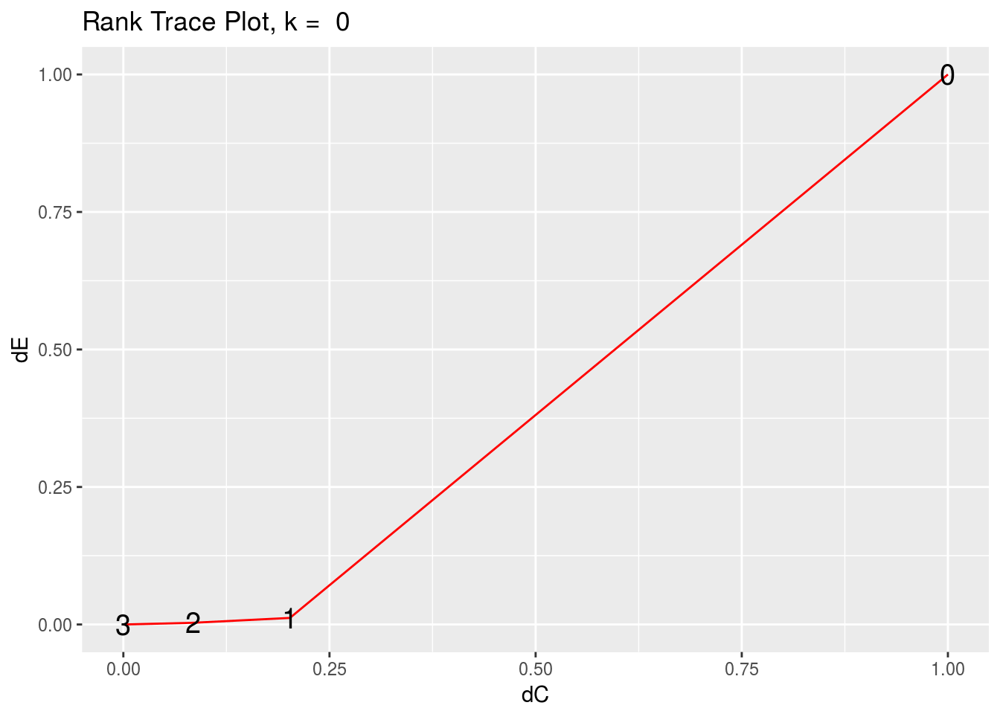
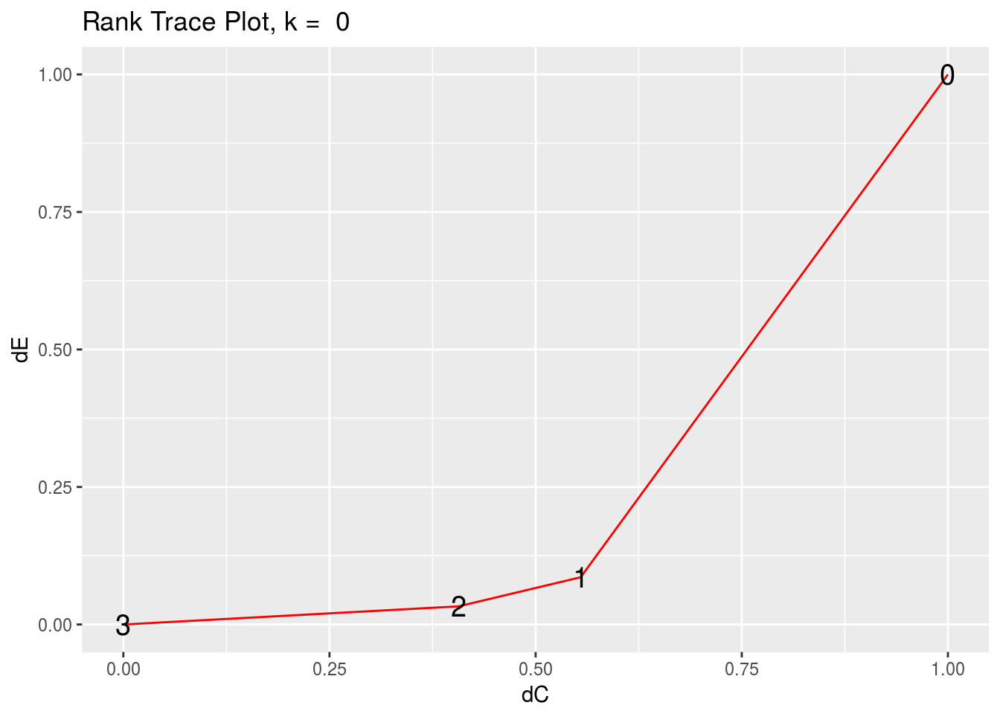
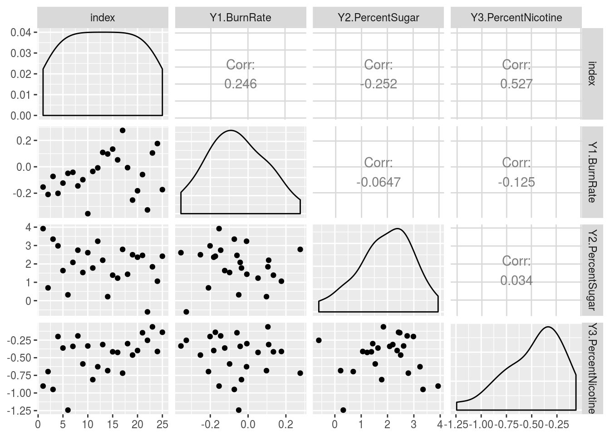

rrr for Multivariate Regression
Chris Addy
2016-11-29
library(rrr)Classical Multivariate Regression
Let \(\mathbf{X} = \left(X_1, X_2, \dots, X_r\right)^\tau\) and \(\mathbf{Y} = \left(Y_1, Y_2, \dots, Y_s\right)^\tau\), i.e., \(\mathbf{X}\) is a random vector. The classical multivariate regression model is given by
\[ \overset{s \times 1}{\mathbf{Y}} = \overset{s \times 1}{\boldsymbol{\mu}} + \overset{s \times r}{\mathbf{C}} \; \overset{r \times 1}{\mathbf{X}} + \overset{s \times 1}{\varepsilon} \]
with
\[ \mathrm{E}\left(\varepsilon\right) = \mathbf{0}, \quad \mathrm{cov}\left(\varepsilon\right) = \mathbf{\Sigma}_{\varepsilon \varepsilon} \]
and \(\varepsilon\) is distributed independently of \(\mathbf{X}.\)
To estimate \(\boldsymbol{\mu}\) and \(\mathbf{C}\) we minimize the least-squares criterion
\[ \mathrm{E}\left[\left(\mathbf{Y} - \boldsymbol{\mu} - \mathbf{C} \mathbf{X}\right)\left(\mathbf{Y} - \boldsymbol{\mu} - \mathbf{C}\mathbf{X}\right)^\tau\right], \]
with expecation taken over the joint distribution of \(\left(\mathbf{X}^\tau, \mathbf{Y}^\tau\right)\), with the assumption that \(\mathbf{\Sigma}_{XX}\) is nonsingular, and therefore invertible.
This is minimized when
\[ \begin{aligned} \boldsymbol{\mu} & = \boldsymbol{\mu}_Y - \mathbf{C} \boldsymbol{\mu} \\ \mathbf{C} & = \mathbf{\Sigma}_{YX} \mathbf{\Sigma}_{XX}^{-1} \end{aligned} \]
The least-squares estimator of \(\mathbf{C}\) is given by
\[ \hat{\mathbf{C}} = \hat{\mathbf{\Sigma}}_{YX} \hat{\mathbf{\Sigma}}_{XX}^{-1} \]
Note that \(\mathbf{C}\) and hence \(\hat{\mathbf{C}}\) contains no term that takes into the account the correlation of the \(Y_i\)s. This is a surprising result, since we would expect correlation among the responses.
In other words, to find the least-squares estimate \(\hat{\mathbf{C}}\) of \(\mathbf{C}\), one need only regress \(\mathbf{X}\) separately on each \(Y_i\) and concatenate those multiple-regression coefficient vectors into a matrix to construct the estimated coefficient matrix \(\hat{\mathbf{C}}\).
The classical multivariate regression model is not truly multivariate.
The tobacco Data Set
library(dplyr)
data(tobacco)
tobacco <- as_data_frame(tobacco)
glimpse(tobacco)## Observations: 25
## Variables: 9
## $ Y1.BurnRate <dbl> 1.55, 1.63, 1.66, 1.52, 1.70, 1.68, 1.78,...
## $ Y2.PercentSugar <dbl> 20.05, 12.58, 18.56, 18.56, 14.02, 15.64,...
## $ Y3.PercentNicotine <dbl> 1.38, 2.64, 1.56, 2.22, 2.85, 1.24, 2.86,...
## $ X1.PercentNitrogen <dbl> 2.02, 2.62, 2.08, 2.20, 2.38, 2.03, 2.87,...
## $ X2.PercentChlorine <dbl> 2.90, 2.78, 2.68, 3.17, 2.52, 2.56, 2.67,...
## $ X3.PercentPotassium <dbl> 2.17, 1.72, 2.40, 2.06, 2.18, 2.57, 2.64,...
## $ X4.PercentPhosphorus <dbl> 0.51, 0.50, 0.43, 0.52, 0.42, 0.44, 0.50,...
## $ X5.PercentCalcium <dbl> 3.47, 4.57, 3.52, 3.69, 4.01, 2.79, 3.92,...
## $ X6.PercentMagnesium <dbl> 0.91, 1.25, 0.82, 0.97, 1.12, 0.82, 1.06,...We see that the tobacco data set1 has 9 variables and 25 observations. There are 6 \(X_i\) predictor variables – representing the percentages of nitrogen, chlorine, potassium, phosphorus, calcium, and magnesium, respectively – and 3 \(Y_j\) response variables – representing cigarette burn rates in inches per 1,000 seconds, percent sugar in the leaf, and percent nicotine in the leaf, respectively.
tobacco_x <- tobacco %>%
select(starts_with("X"))
tobacco_y <- tobacco %>%
select(starts_with("Y"))GGally::ggcorr(tobacco_x)
GGally::ggcorr(tobacco_y)
## multivariate regression
x <- as.matrix(tobacco_x)
y <- as.matrix(tobacco_y)
multivar_reg <- t(cov(y, x) %*% solve(cov(x)))
## separate multiple regression
lm1 <- lm(y[,1] ~ x)$coeff
lm2 <- lm(y[,2] ~ x)$coeff
lm3 <- lm(y[,3] ~ x)$coeff
### compare multivariate regression and separate multiple regresions
multivar_reg## Y1.BurnRate Y2.PercentSugar Y3.PercentNicotine
## X1.PercentNitrogen 0.06197282 -4.3186662 0.5521620
## X2.PercentChlorine -0.16012848 1.3262863 -0.2785609
## X3.PercentPotassium 0.29211810 1.5899470 0.2175877
## X4.PercentPhosphorus -0.65798016 13.9526510 -0.7231067
## X5.PercentCalcium 0.17302593 0.5525913 0.3230914
## X6.PercentMagnesium -0.42834825 -3.5021083 2.0048603cbind(lm1, lm2, lm3)## lm1 lm2 lm3
## (Intercept) 1.41113730 13.6329133 -1.5648236
## xX1.PercentNitrogen 0.06197282 -4.3186662 0.5521620
## xX2.PercentChlorine -0.16012848 1.3262863 -0.2785609
## xX3.PercentPotassium 0.29211810 1.5899470 0.2175877
## xX4.PercentPhosphorus -0.65798016 13.9526510 -0.7231067
## xX5.PercentCalcium 0.17302593 0.5525913 0.3230914
## xX6.PercentMagnesium -0.42834825 -3.5021083 2.0048603Reduced-Rank Regression
One way to introduce a multivariate component into the model is to allow for the possibility that \(\mathbf{C}\) is deficient, or of reduced-rank \(t\).
\[ \mathrm{rank}\left(\mathbf{C}\right) = t \leq \mathrm{min}\left(r, s\right) \]
In other words, we allow for the possibility that there are unknown linear constraints on \(\mathbf{C}\).
Without loss of generality, we consider the case when \(r > s\), i.e., \(t < s\).
When \(t = s\), the regression model is full-rank, and can be fit using multiple regression on each \(Y_i \in \mathbf{Y}.\) When \(t < s\), \(\mathbf{C}\) can be decomposed into non-unique matrices \(\mathbf{A}_{s \times t}\) and \(\mathbf{B}_{t \times r}\), such that \(\mathbf{C} = \mathbf{AB},\) and the multivariate regression model is given by
\[ \overset{s \times 1}{\mathbf{Y}} = \overset{s \times 1}{\boldsymbol{\mu}} + \overset{s \times t}{\mathbf{A}} \; \overset{t \times r}{\mathbf{B}} \; \overset{r \times 1}{\mathbf{X}} + \overset{s \times 1}{\varepsilon} \]
Estimating \(\boldsymbol{\mu}, \mathbf{A}, \mathbf{B}\), and ultimately the reduced-rank regression coefficient \(\mathbf{C}^{\left(t\right)}\), is done by minimizing the weighted sum-of-squares criterion
\[ \mathrm{E}\left[\left(\mathbf{Y} - \boldsymbol{\mu} - \mathbf{ABX}\right)^\tau \mathbf{\Gamma}\left(\mathbf{Y} - \boldsymbol{\mu} - \mathbf{ABX}\right)\right] \]
where \(\boldsymbol{\Gamma}\) is a positive-definite symmetric \(\left(s \times s\right)\)-matrix of weights, the expectation of which is taken over the joint distribution \(\left(\mathbf{X}^\tau, \mathbf{Y}^\tau\right)^\tau\). This weighted sum-of-squares criterion is minimized when
\[ \begin{aligned} \boldsymbol{\mu}^{\left(t\right)} & = \boldsymbol{\mu}_Y - \mathbf{A}^{\left(t\right)}\mathbf{B}^{\left(t\right)}\boldsymbol{\mu}_X \\ \mathbf{A}^{\left(t\right)} & = \mathbf{\Gamma}^{-1/2}\mathbf{V}_t \\ \mathbf{B}^{\left(t\right)} & = \mathbf{V}_t^\tau \boldsymbol{\Gamma}^{-1/2}\mathbf{\Sigma}_{YX}\mathbf{\Sigma}_{XX}^{-1} \\ \end{aligned} \]
where \(\mathbf{V}_t = \left(\mathbf{v}_1, \dots, \mathbf{v}_t\right)\) is an \(\left(s \times t\right)\)-matrix, with \(\mathbf{v}_j\) the eigenvector associated with the \(j\)th largest eigenvalue of
\[ \mathbf{\Gamma}^{1/2}\mathbf{\Sigma}_{YX} \mathbf{\Sigma}_{XX}^{-1} \mathbf{\Sigma}_{XY} \mathbf{\Gamma}^{1/2} \]
In practice, we try out different values of \(\mathbf{\Gamma}\). Two popular choices – and ones that lead to interesting results as we will see – are \(\mathbf{\Gamma} = \mathbf{I}_r\) and \(\mathbf{\Gamma} = \boldsymbol{\Sigma}_{YY}^{-1}\).
Since the reduced-rank regression coefficient relies on inverting \(\boldsymbol{\Sigma}_{XX}\) and, possibly, \(\boldsymbol{\Sigma}_{YY}\), we want to take into consideration the cases when \(\boldsymbol{\Sigma}_{XX}, \boldsymbol{\Sigma}_{YY}\) are singular or difficult to invert.
Borrowing from ridge regression, we perturb the diagonal of the covariance matrices by some small constant, \(k\). Thus, we carry out the reduced-rank regression procedure using
\[ \begin{aligned} \hat{\boldsymbol{\Sigma}}_{XX}^{\left(k\right)} & = \hat{\boldsymbol{\Sigma}}_{XX} + k \mathbf{I}_r \\ \hat{\boldsymbol{\Sigma}}_{YY}^{\left(k\right)} & = \hat{\boldsymbol{\Sigma}}_{YY} + k \mathbf{I}_r \end{aligned} \]
Assessessing Effective Dimensionality
Estimate \(t\) and \(k\) with rank_trace() and rank_trace_plot()
args(rank_trace)## function (x, y, gamma_matrix, type = "cov", k = 0)
## NULLargs(rank_trace_plot)## function (x, y, gamma_matrix, type = "cov", k = 0)
## NULLSince \(\hat{\mathbf{C}}\) is calculated using sample observations, its mathematical rank will always be full, but it will have a statistical rank \(t\) that is an unknown hyperparameter that
### use the identity matrix for gamma
ident <- diag(1, dim(tobacco_y)[2])
rank_trace(tobacco_x, tobacco_y, ident) ## # A tibble: 4 × 3
## ranks dC dEE
## <int> <dbl> <dbl>
## 1 0 1.00000000 1.000000000
## 2 1 0.20198327 0.011933691
## 3 2 0.08419093 0.003095346
## 4 3 0.00000000 0.000000000rank_trace_plot(tobacco_x, tobacco_y, ident)
### use inverse of estimated covariance of Y for gamma
gamma2 <- solve(cov(tobacco_y))
rank_trace(tobacco_x, tobacco_y, gamma2)## # A tibble: 4 × 3
## ranks dC dEE
## <int> <dbl> <dbl>
## 1 0 1.0000000 1.00000000
## 2 1 0.5546365 0.08594144
## 3 2 0.4063885 0.03296964
## 4 3 0.0000000 0.00000000rank_trace_plot(tobacco_x, tobacco_y, gamma2)
Fitting Reduced-Rank Regression Model
Fit reduced-rank regression model with rrr()
args(rrr)## function (x, y, gamma_matrix, rank = "full", type = "cov", k = 0)
## NULLThe main function in the rrr package is – unsurprisingly – rrr()
rrr() takes as inputs the data frames, or matrices, of input and response variables, the weight matrix \(\mathbf{\Gamma}\), the rank (defaulted to full rank), the type of covariance matrix to be used (either covariance or correlation), and the ridge constant \(k\).
rrr() returns a list containing the means \(\hat{\boldsymbol{\mu}}\), the matrices \(\hat{\mathbf{A}}\), \(\hat{\mathbf{B}}\), and the coefficient matrix \(\hat{\mathbf{C}}\)
rrr(tobacco_x, tobacco_y, ident, rank = "full") ## $mean
## [,1]
## [1,] 1.411137
## [2,] 13.632913
## [3,] -1.564824
##
## $A
## [,1] [,2] [,3]
## [1,] 0.03107787 -0.4704307 0.8818895
## [2,] -0.97005030 0.1984637 0.1400521
## [3,] 0.24090782 0.8598297 0.4501736
##
## $B
## X1.PercentNitrogen X2.PercentChlorine X3.PercentPotassium
## [1,] 4.3242696 -1.35864835 -1.4808316
## [2,] -0.4114869 0.09903401 0.3652138
## [3,] -0.3016163 -0.08086722 0.5782436
## X4.PercentPhosphorus X5.PercentCalcium X6.PercentMagnesium
## [1,] -13.729424 -0.4528289 3.86689562
## [2,] 2.456879 0.3060762 1.23030547
## [3,] 1.048309 0.3754285 0.03430168
##
## $C
## X1.PercentNitrogen X2.PercentChlorine X3.PercentPotassium
## [1,] 0.06197282 -0.1601285 0.2921181
## [2,] -4.31866620 1.3262863 1.5899470
## [3,] 0.55216201 -0.2785609 0.2175877
## X4.PercentPhosphorus X5.PercentCalcium X6.PercentMagnesium
## [1,] -0.6579802 0.1730259 -0.4283482
## [2,] 13.9526510 0.5525913 -3.5021083
## [3,] -0.7231067 0.3230914 2.0048603
##
## $eigen_values
## [1] 3.28209974 0.03782978 0.01015996We can see that rrr() with rank = "full" and k = 0 returns the classical multivariate regression coefficients as before. They differ only by a transpose, and is presented this way in rrr as a matter of convention. It is this form that is presented in the literature (Izenman, 2008).
Diagnostics
Calculate Residuals with rrr_residuals()
args(rrr_residuals_plot)## function (x, y, gamma_matrix, rank = "full", type = "cov", k = 0)
## NULLrrr_residuals(tobacco_x, tobacco_y, ident, rank = 1)## # A tibble: 25 × 3
## Y1.BurnRate Y2.PercentSugar Y3.PercentNicotine
## <dbl> <dbl> <dbl>
## 1 -0.15358056 3.9207245 -0.9019766
## 2 -0.20963638 0.6975085 -0.6966471
## 3 -0.07296342 3.3478677 -0.9497452
## 4 -0.20128009 2.9831896 -0.1991789
## 5 -0.12358413 1.6364610 -0.3622142
## 6 -0.04949370 0.3195653 -1.2428487
## 7 -0.04185307 2.0824285 -0.3387954
## 8 -0.14497977 2.7465342 -0.1903404
## 9 -0.09788965 1.5330911 -0.5878621
## 10 -0.35531326 2.6111104 -0.3332054
## # ... with 15 more rows Plot Residuals with rrr_residuals_plot()
args(rrr_residuals)## function (x, y, gamma_matrix, rank = "full", type = "cov", k = 0)
## NULLWe can visually check the model assumptions that
rrr_residuals_plot(tobacco_x, tobacco_y, ident, rank = 1)
Anderson, R.L and Bancroft, T.A (1952). Statistical Theory in Research, New York: McGraw-Hill. p. 205.↩